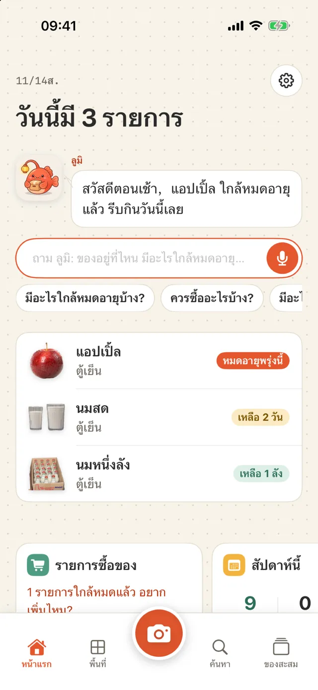
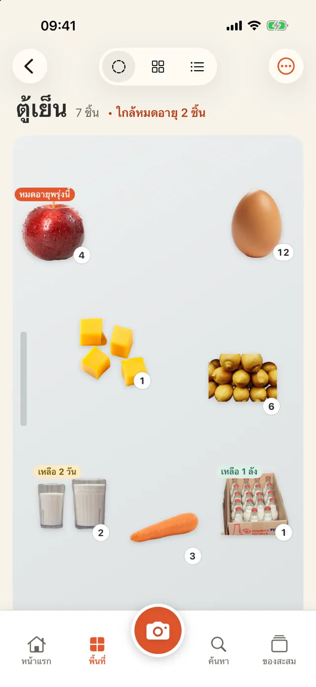
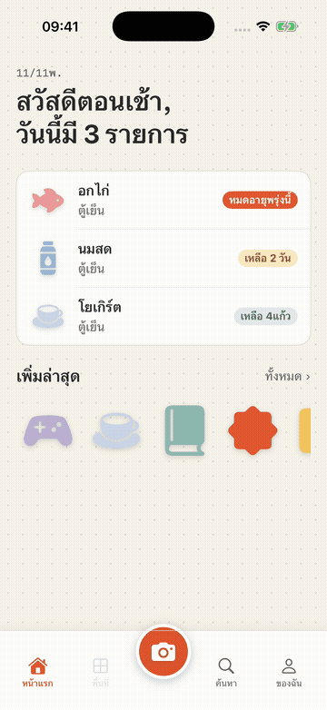
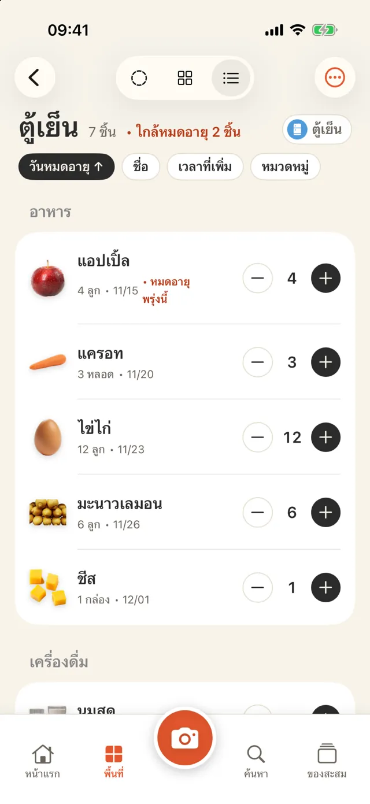
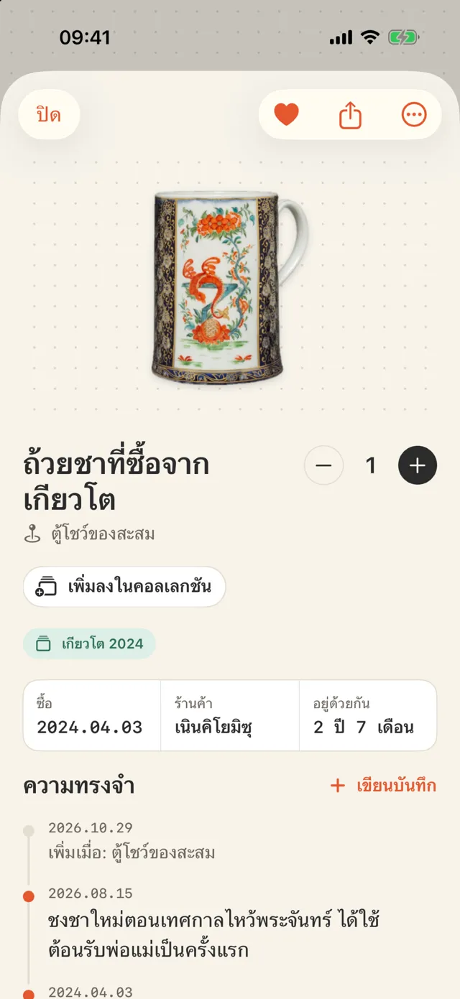
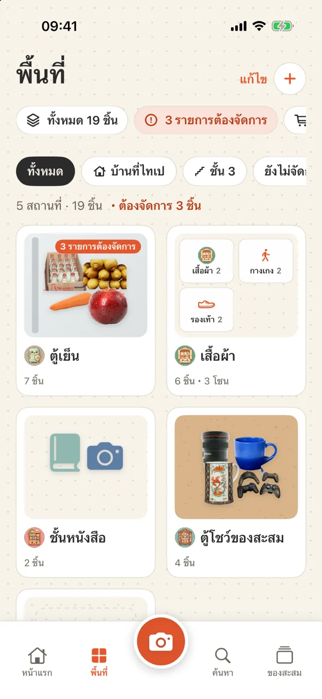
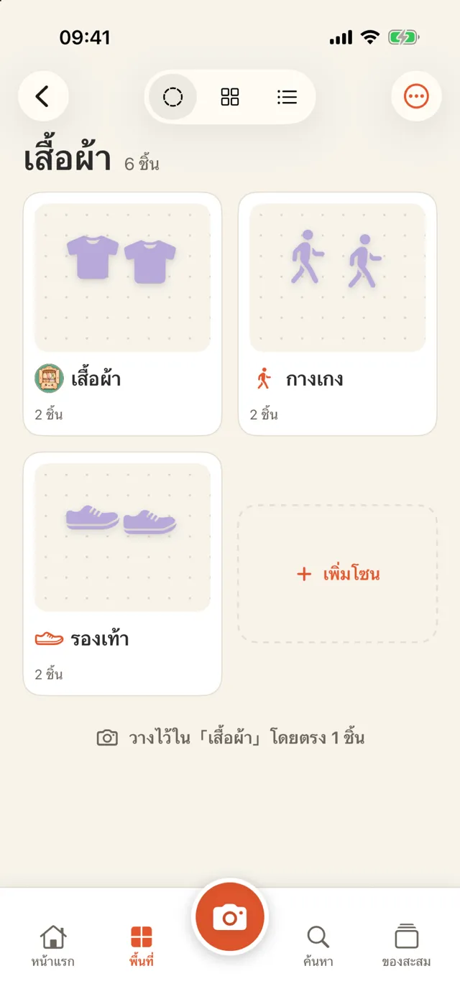
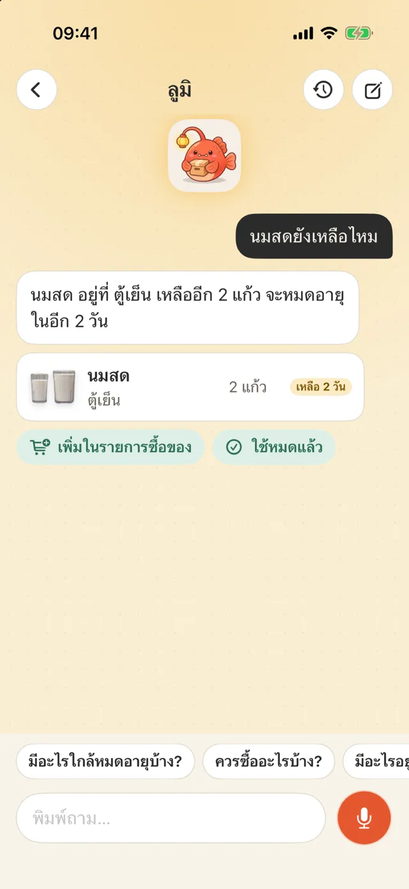
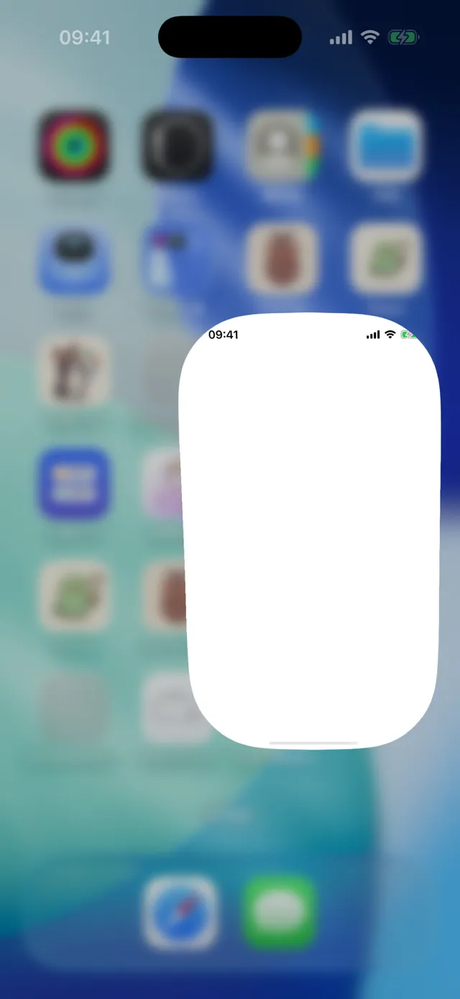
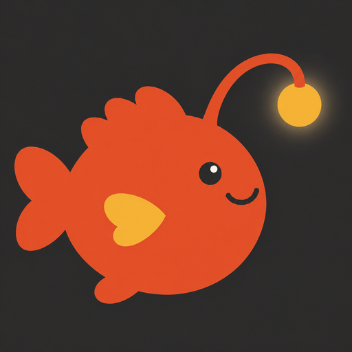

แอปบันทึกของในบ้านและของที่ระลึกสำหรับ iPhone
ถ่ายรูปเพื่อบันทึกของ
ค้นหาเมื่อต้องใช้
นมในตู้เย็น กระดาษชำระในห้องเก็บของ หนังสือบนชั้น หรือแก้วที่ซื้อจากทริป ถ่ายรูปหนึ่งครั้งเพื่อบันทึกว่าอยู่ที่ไหน เหลือเท่าไร และหมดอายุเมื่อไร ข้อมูลจะอยู่บนโทรศัพท์ของคุณ
ดาวน์โหลดบน App Store- ✓ ดาวน์โหลดฟรี ใช้ได้ฟรี 3 ที่เก็บ
- ✓ ไม่ต้องมีบัญชี
- ✓ ข้อมูลอยู่บน iPhone ของคุณ

เพิ่มของ
ถ่ายรูป ตัดพื้นหลัง แล้วบันทึก
เล็งกล้องไปที่ของแล้วกดถ่าย แอปจะลบพื้นหลังให้อัตโนมัติ กล้องเดียวกันใช้สแกนบาร์โค้ดได้ โดยค้นหาอาหารใน Open Food Facts และหนังสือใน Open Library เมื่อกลับจากซื้อของ ใช้การสแกนต่อเนื่องเพื่อบันทึกของหลายรายการในครั้งเดียว

เลือกมุมมอง
ดูแบบจัดวาง ตาราง หรือรายการ
มุมมองจัดวางแสดงรูปบนประตูตู้เย็น กระดาษลายจุด หรือกระดานไม้ก๊อก คุณลากและปรับขนาดรูปได้ มุมมองตารางช่วยหาของ ส่วนมุมมองรายการใช้ตรวจนับ โดยมีปุ่มเพิ่มหรือลดจำนวน และปัดเพื่อทำเครื่องหมายว่าใช้หมดแล้ว

บันทึกวันหมดอายุ
ให้โทรศัพท์อ่านวันที่บนบรรจุภัณฑ์
เมื่อถ่ายรูป แอปจะอ่านวันหมดอายุที่พิมพ์บนบรรจุภัณฑ์ แล้วให้คุณตรวจสอบก่อนบันทึก คุณเลือกได้ว่าจะให้แจ้งเตือนล่วงหน้ากี่วัน

เก็บความทรงจำ
เขียนเรื่องราวของสิ่งที่เก็บไว้
แก้วจากทริปหรือของขวัญจากเพื่อนสามารถเพิ่มรูป วันที่ สถานที่ และข้อความสั้น ๆ ได้ จัดเป็นคอลเลกชัน เช่น “เกียวโต 2024” แล้วดูความทรงจำ “วันนี้ในอดีต” บนหน้าแรก

ตั้งที่เก็บ
เลือกตู้เย็น ห้องเก็บของ 800 ชั้นหนังสือ หรือตั้งชื่อเอง
มีแม่แบบสำหรับตู้เย็น ห้องเก็บของ 800 (ห้องเก็บของที่เดินเข้าไปได้ ลึกประมาณ 80 ซม.) ตู้เก็บของ ชั้นหนังสือ ตู้เสื้อผ้า ชั้นวางของสะสม กล่องยา และกล่องย้ายบ้าน หรือเลือกไอคอนและตั้งชื่อเองก็ได้ หากต้องการ คุณจัดกลุ่มที่เก็บตามบ้านหรือชั้นได้

จัดที่เก็บซ้อนกัน
สร้างที่เก็บไว้ในที่เก็บอื่น
ในที่เก็บ “เสื้อผ้า” คุณอาจสร้าง “เสื้อ” “กางเกง” และ “รองเท้า” การ์ดด้านนอกจะแสดงที่เก็บภายใน หากต้องการย้าย ให้เลือก “ย้ายเข้า…” ในเมนู หรือกดค้างแล้วลากไปวางบนการ์ดอื่น หมวดหมู่ก็มีหมวดหมู่ย่อย เช่น เสื้อผ้า › กางเกง ซึ่งแอปจะเลือกให้อัตโนมัติเมื่อบันทึก

ถาม ลูมิ
หาของไม่เจอ ให้ถาม ลูมิ
ที่หน้าแรก พิมพ์ถามมาสคอต ลูมิ ว่า “หนังสือเดินทางอยู่ไหน” หรือ “ยังมีนมเหลือไหม” หรือกดค้างเพื่อพูด ลูมิ จะตอบว่าอยู่ที่ไหน เหลือเท่าไร และหมดอายุเมื่อไร ระบบจะรู้จำเสียงบนโทรศัพท์เมื่ออุปกรณ์รองรับ และแม้ไม่ใช้ AI ก็ยังค้นหาจากชื่อ หมวดหมู่ และที่เก็บได้

ใช้เมื่อไร
- ตรวจของในตู้เย็นก่อนซื้อของ
- เลือกใช้ของที่ใกล้หมดอายุก่อนทำอาหาร
- หาว่าถ่าน AA อยู่ที่ไหน
- ดูว่าให้ใครยืมหนังสือไป
- บันทึกของในแต่ละกล่องตอนย้ายบ้าน
- จัดของที่ระลึกจากการเดินทาง
- ตรวจของหมดอายุในกล่องยา
ดูวิธีใช้ใน 50 วินาที
ดูการเปลี่ยนมุมมองตู้เย็นทั้งสามแบบ ปรับจำนวน เปิดที่เก็บภายใน “เสื้อผ้า” ดูความทรงจำของของที่ระลึก และถาม ลูมิ ว่าอะไรใกล้หมดอายุ
AI (เลือกใช้ได้)
ทุกฟังก์ชันใช้งานได้โดยไม่ต้องเปิด AI หากต้องการใช้ คุณเลือกได้สองแหล่ง โดยแอปจะเรียกใช้ AI เฉพาะเมื่อแตะปุ่ม AI
ระบบในตัวของ Apple
ใช้ Apple Intelligence บน iPhone ได้ฟรี ไม่ต้องเชื่อมต่ออินเทอร์เน็ต และข้อมูลไม่ออกจากโทรศัพท์ ต้องใช้ iPhone รุ่นที่รองรับและ iOS 26 ขึ้นไป
API key ของคุณเอง
รองรับ Gemini, Claude, DeepSeek และบริการอื่น ๆ โดยเก็บคีย์ไว้เฉพาะในพวงกุญแจของ iPhone เครื่องนี้ ข้อมูลส่งตรงไปยังบริการที่คุณเลือก ไม่ผ่านเรา
- ตั้งชื่อของ: ดูรูปแล้วเสนอชื่อ หมวดหมู่ และหน่วยนับ
- ดูที่เก็บนี้: แนะนำว่าควรกินอะไรในตู้เย็นก่อน ควรซื้ออะไรเติมในห้องเก็บของ หรืออะไรหมดอายุในกล่องยา (ไม่ใช่คำแนะนำทางการแพทย์)
- ค้นหาด้วยประโยค: เพิ่มคำที่มีความหมายใกล้กันแล้วค้นหา
- เรียบเรียงความทรงจำ: นำคำสั้น ๆ มาเขียนเป็นย่อหน้าโดยไม่เพิ่มเรื่องที่คุณไม่ได้บอก
ดูเหรียญตราและบันทึกภาพเพื่อแชร์
หากไม่มีของหมดอายุในตู้เย็นติดต่อกัน 30 วัน คุณจะได้รับเหรียญตรา “ผู้ดูแลตู้เย็น” คุณบันทึกเหรียญตรา เรื่องราวของสิ่งของ และสรุปประจำปีเป็นภาพได้ โดยค่าเริ่มต้นจะไม่แสดงสถานที่และราคา

รายละเอียด
| อุปกรณ์ | iPhone (iOS 18 ขึ้นไป) |
|---|---|
| ภาษา | English, 繁體中文, 简体中文, 日本語, 한국어, ไทย |
| ราคา | ดาวน์โหลดฟรี (มีโฆษณาแบนเนอร์ ใช้ได้ 3 ที่เก็บ และดูการสนทนาล่าสุดกับ ลูมิ ได้ 2 รายการ); Pro นำโฆษณาและข้อจำกัดทั้งสองออก: US$1/สัปดาห์, US$3/เดือน หรือจ่ายครั้งเดียว US$5 |
| บัญชี | ไม่จำเป็น |
| ข้อมูล | อยู่เฉพาะบน iPhone เครื่องนี้ ส่งออกเป็น CSV ได้ และกู้คืนรายการที่ลบได้ภายใน 30 วัน |
| เครือข่าย | ใช้เฉพาะเมื่อค้นหาบาร์โค้ดหรือใช้บริการ AI ที่คุณเลือก |
ข้อจำกัด
- ยังไม่มีการซิงค์ผ่าน iCloud หรือการแชร์กับครอบครัว
- สินค้าที่ไม่อยู่ในฐานข้อมูลบาร์โค้ดต้องตั้งชื่อเอง เมื่อสแกนบาร์โค้ดเดิมอีกครั้ง แอปจะใช้ชื่อนั้น
- การตัดพื้นหลังขึ้นอยู่กับรูป หากตัดไม่ได้ แอปจะใช้รูปต้นฉบับ
ดูว่าข้อมูลเก็บไว้ที่ไหน
- ไม่ต้องมีบัญชี และไม่มีเซิร์ฟเวอร์เก็บข้อมูลของคุณ
- เวอร์ชันฟรีแสดงเฉพาะโฆษณาที่ไม่ปรับตามบุคคล และไม่ติดตามคุณ
- ใช้กล้องและรูปภาพเฉพาะเมื่อคุณสั่งใช้งาน

เริ่มจากตู้เย็น
เปิด Deepstash เลือก “ตู้เย็น” แล้วถ่ายรูปของสามอย่างที่คุณซื้อบ่อยที่สุด
ดาวน์โหลดบน App Store